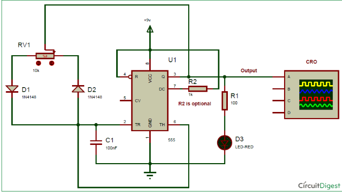
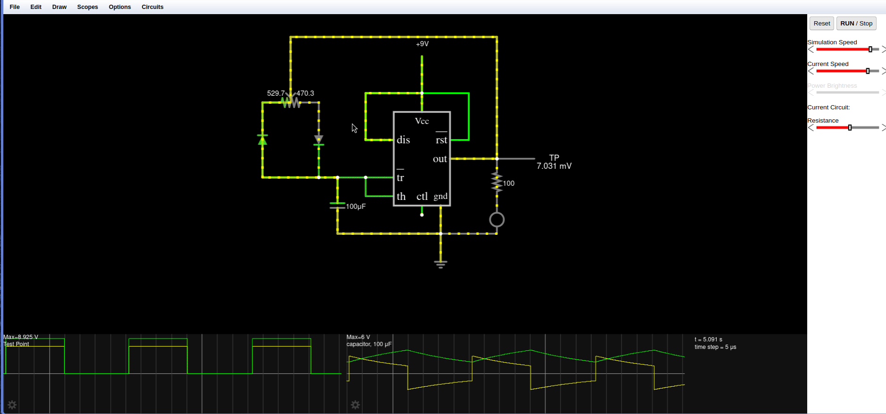

Documentație Circuit Temporizator 555
Această pagină oferă o prezentare generală a unui circuit cu temporizator 555 utilizat ca multivibrator astabil. Acest tip de circuit generează o ieșire continuă în formă de undă dreptunghiulară, utilă pentru aplicații de cronometrare, generare de impulsuri și frecvență.
Diagrama Circuitului

Explicația Componentelor
- U1 (Circuit Integrat Temporizator 555): Nucleul circuitului, configurat în modul astabil pentru a genera o undă dreptunghiulară.
- RV1 (Potentiometru de 10k): Ajustează factorul de umplere al formei de undă de ieșire.
- D1 și D2 (Diodă 1N4148): Controlează căile de încărcare și descărcare ale condensatorului C1.
- C1 (Condensator de 100nF): Determină frecvența împreună cu RV1.
- R1 (Rezistor de 100 Ohmi): Limitează curentul prin LED.
- R2 (Rezistor de 1k, Opțional): Rezistor opțional pentru o flexibilitate suplimentară în configurare.
- D3 (LED-ROȘU): Ieșire vizuală pentru a indica impulsurile formei de undă.
Principiul de Funcționare
Circuitul funcționează prin încărcarea și descărcarea condensatorului C1 prin diode și potentiometru, care determină frecvența și factorul de umplere al ieșirii. LED-ul clipeste în sincronizare cu forma de undă generată, oferind o indicație vizuală.
Demonstratie Animată

Aplicații
- Beculețe și indicatoare intermitente
- Generatoare de impulsuri și semnale dreptunghiulare
- Generarea și modularea frecvențelor